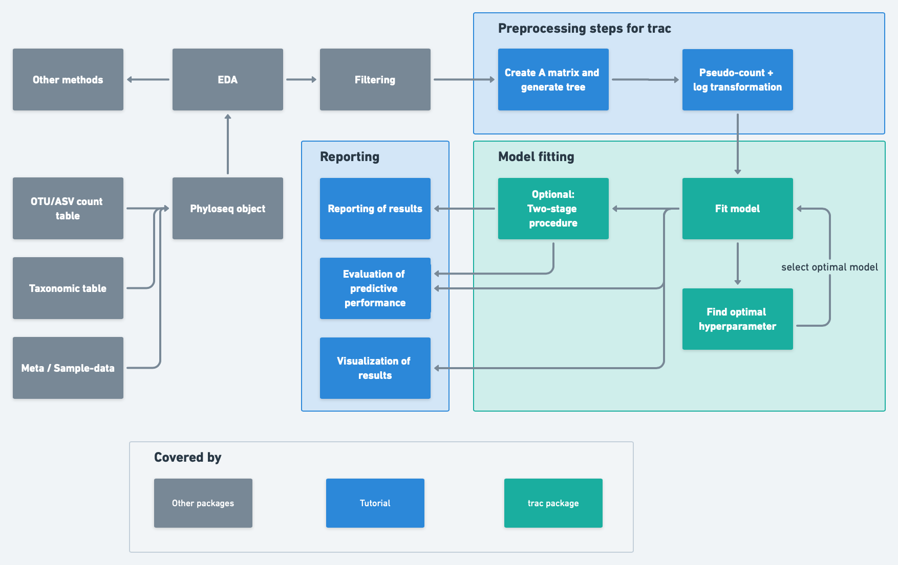

vignettes/trac-classification-pipeline.Rmd
trac-classification-pipeline.Rmd
library(tidyverse) # data wrangling and visualization
library(phyloseq) # microbiome data wrangling
library(trac) # trac
library(kableExtra) # creating tables in rmarkdownThis tutorial aims to provide insight into a possible analysis
pipeline. We will start with a phyloseq object (McMurdie and Holmes 2013). This
phyloseq object should contain at least the OTU/ASV counts
and the taxonomic assignment for each OTU/ASV.
knitr::include_graphics("figures/trac_workflow.png")
To demonstrate how to use trac, we use the dataset of (Yatsunenko et al. 2012) from the MLRepo. (Vangay, Hillmann, and
Knights 2019). The given OTU labels are matched with the
greengenes 97 database (McDonald et al.
2012). OTUs appearing in less than 10% of the samples are
excluded and only bacteria are included. The concrete
phyloseq object (malawi) contains:
otu_table: contains 54 observations and 5008 OTUstax_table: contains the taxonomic assignments of the
OTUs. The rownames correspond to the columns of the
otu_table
sam_data: contains the to variable of interest (Vars)
and additional non-compositional covariates age (numeric) and sex
(factor)
data("malawi")The workflow to generate the A matrix based on the
phyloseq object could be:
phyloseq
object.tax_table_to_phylo. This is also
helpful to visualize the results at the end.phylo_to_A to generate the A matrix
# 1. extract the taxonomic table from the phyloseq object
tax <- malawi@tax_table@.Data
# 2. add an OTU column based on the rownames and name the column OTU
tax <- cbind(tax, rownames(tax))
colnames(tax)[ncol(tax)] <- "OTU"
# In this example is rooted in bacteria since we only consider bacteria. If one also wants to
# include archea one needs to add another root node e.g. cbind(root = "life", tax). Need to
# adjust the for loops in the next steps and add the root to the formula in step 5
# 3. Replace unknown taxonomic assignement on the corresponding level
# iterate over all levels
for (i in seq_len(7)) {
# add a number when the type is unknown... e.g. "g__"
ii <- nchar(tax[, i]) == 3
if (sum(ii) > 0)
tax[ii, i] <- paste0(tax[ii, i], 1:sum(ii))
}
# 4. add the ancestor information with ::
# iterate over all levels
for (i in 2:8) {
tax[, i] <- paste(tax[, i-1], tax[, i], sep = "::")
}
tax <- as.data.frame(tax, stringsAsFactors = TRUE)
# 5. form phylo object:
tree1 <- tax_table_to_phylo(~Kingdom/Phylum/Class/Order/
Family/Genus/Species/OTU,
data = tax, collapse = TRUE)
# 6. convert this to an A matrix to be used for aggregation:
A <- phylo_to_A(tree1)trac expects log transformed values as inputs. Since \(log(0)\) is undefined we need to add a pseudo-count (e.g. 1)
log_pseudo <- function(x, pseudo_count = 1) log(x + pseudo_count)
z <- log_pseudo(malawi@otu_table@.Data)First we split the data into a train-test split to evaluate the predictive performance at the end. Other more advanced methods can be used as well.
# extact the label
y <- malawi@sam_data$Var
# transform depended variable to -1 and 1
y <- (y == "Malawi") * 2 - 1
# set additional covarariates to data.frame, delete the label and set the binary variable
# to factor --> trac will automatically transform it internally to {0, 1}
additional_covariates <- data.frame(malawi@sam_data) %>%
select(-Var) %>%
mutate(sex = as.factor(sex))
# define seed for reproducibility
set.seed(1)
# train test split
ntot <- length(y)
n <- round(2/3 * ntot)
tr <- sample(ntot, n)
# define training and test data
ytr <- y[tr]
yte <- y[-tr]
ztr <- z[tr, ]
zte <- z[-tr, ]
additional_covariates_tr <- additional_covariates[tr, ]
additional_covariates_te <- additional_covariates[-tr, ]We will fit the model on the train data. The task is to predict if
the person lives in Venezuela or Malawi therefore a binary
classification task. It is possible to specify this by the argument
method. The method will solve the lambda path and selecting
the optimal tuning parameter \(\lambda\) is a crucial. The path for the
coefficient can be plotted with plot_trac_path.
# fit trac with c1
fit <- trac(ztr, ytr, A = A, min_frac = 1e-1, nlam = 10, method = "classif")
plot_trac_path(fit)plot of chunk plot_trac_classification_path
As a baseline we can fit a sparse log-contrast model on the OTU level as well.
fit_log_contrast <- sparse_log_contrast(Z = ztr, y = ytr, min_frac = 1e-1,
nlam = 10, method = "classif")We will fit another model with the additional non-compositional
covariates for comparison. It is possible to assign different weights
for the additional covariates. Smaller values
(w_additional_covariates) will force the model to include
the covariate.
fit_add_covariates <- trac(Z = ztr, y = ytr, A = A,
additional_covariates = additional_covariates_tr,
min_frac = 1e-1, nlam = 10, method = "classif",
normalized = TRUE,
w_additional_covariates = c(0.001, 0.001))
plot_trac_path(fit_add_covariates)plot of chunk plot_trac_classification_path_add_covariates
The optimal \(\lambda\) can be determined with cross-validation for the 3 models.
set.seed(1)
# run cross validation
cvfit <- cv_trac(fit, Z = ztr, y = ytr, A = A)
#> fold 1
#> fold 2
#> fold 3
#> fold 4
#> fold 5
plot_cv_trac(cvfit)plot of chunk plot_trac_classification_cv
set.seed(1)
cvfit_log_contrast <- cv_sparse_log_contrast(fit_log_contrast, Z = ztr, y = ytr)
#> fold 1
#> fold 2
#> fold 3
#> fold 4
#> fold 5
set.seed(1)
cvfit_add_covariates <- cv_trac(fit_add_covariates, Z = ztr, y = ytr, A = A,
additional_covariates =
additional_covariates_tr)
#> fold 1
#> fold 2
#> fold 3
#> fold 4
#> fold 5
plot_cv_trac(cvfit_add_covariates)plot of chunk plot_trac_classification_path_add_covariates_cv
The cross-validation plot of trac for classification without
additional covariates suggests that the model with minimum loss selects
3 components. We can build all possible log–ratios based on the three
components and run another lasso to select the important pairs. The
function second_stage is a wrapper for doing this kind of
tasks. The function internally builds all possible log-ratio pairs and
uses lasso calculated by glmnet to select the predictive
log-ratios. To determine the optimal \(\lambda\) it uses cross-validation.
set.seed(1)
two_stage <- second_stage(Z = ztr, A = A, y = ytr,
betas = fit[[1]]$alpha[, cvfit$cv[[1]]$ibest],
method = "classif",
criterion = "1se")
# get predicted values
# trac
yhat_te <- predict_trac(fit, new_Z = zte)
# trac with additional covariates
yhat_te_add_covariates <- predict_trac(fit_add_covariates, new_Z = zte,
new_additional_covariates = additional_covariates_te)
# sparse log-contrast classification
yhat_te_log_contrast <- predict_trac(list(fit_log_contrast), new_Z = zte)
# two-stage procedure
yhat_te_two <- predict_second_stage(new_Z = zte, fit = two_stage, output = "class")
yhat_te_two <- as.numeric(yhat_te_two)
# calculate missclassification error for each methods
# trac classification
testerr <- colMeans(sign(yhat_te[[1]]) != yte)
nnz <- colSums(fit[[1]]$alpha != 0)
# trac with additional covariates
testerr_add_covariates <- colMeans(sign(yhat_te[[1]]) != yte)
nnz_add_covariates <- colSums(fit_add_covariates[[1]]$alpha != 0)
# sparse log-contrast classification
testerr_log_contrast <- colMeans(sign(yhat_te_log_contrast[[1]]) != yte)
nnz_log_contrast <- colSums(fit_log_contrast$beta != 0)
# two-stage procedure
testerr_two <- mean(yhat_te_two != yte)
# plot missclassification error of test split based on number of
# selected taxa (trac)
tibble(nnz = nnz, testerr = testerr) %>%
ggplot(aes(x = nnz, y = testerr)) +
geom_point() +
geom_vline(xintercept = nnz[cvfit$cv[[1]]$i1se])plot of chunk plot_trac_classification_testerr
# plot missclassification error of test split based on number of
# selected taxa (sparse log contrast)
tibble(nnz = nnz_log_contrast, testerr = testerr_log_contrast) %>%
ggplot(aes(x = nnz_log_contrast, y = testerr_log_contrast)) +
geom_point() +
geom_vline(xintercept = nnz_log_contrast[cvfit_log_contrast$cv$i1se])plot of chunk plot_slc_classification_testerr
The following code shows an example on how to extract the selected components based on the fitted trac object.
# define the different taxonomic ranks
rank_names <- c("Kingdom",
"Phylum",
"Class",
"Order",
"Family",
"Genus",
"Species")
# get non-zero alphas
show_nonzeros <- function(x){
enframe(x[x != 0]) %>%
mutate(name = str_remove_all(name, "[a-z]__"),
name = str_remove_all(name, "'")) %>%
separate(name, into = rank_names, sep = "::") %>%
mutate(across(where(is.character), ~replace_na(.x, " "))) %>%
arrange(value) %>%
rename(alpha = value)
}
show_nonzeros(fit[[1]]$alpha[, cvfit$cv[[1]]$i1se]) %>%
kable()
#> Warning: Expected 7 pieces. Missing pieces filled with `NA` in 2 rows [1, 2].| Kingdom | Phylum | Class | Order | Family | Genus | Species | alpha |
|---|---|---|---|---|---|---|---|
| Bacteria | Firmicutes | Clostridia | Clostridiales | Ruminococcaceae | -0.3666121 | ||
| Bacteria | Firmicutes | Clostridia | Clostridiales | 0.3666121 |